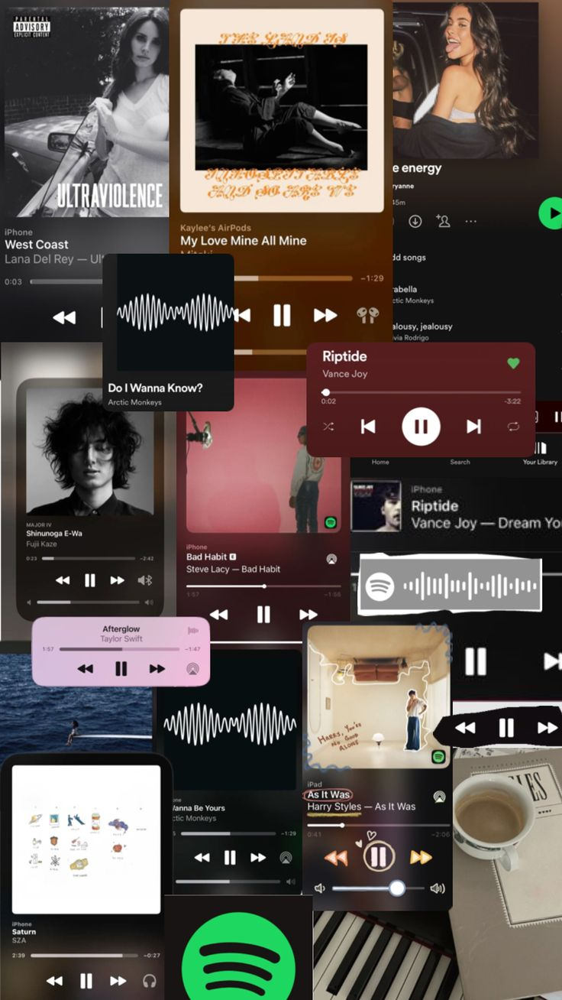
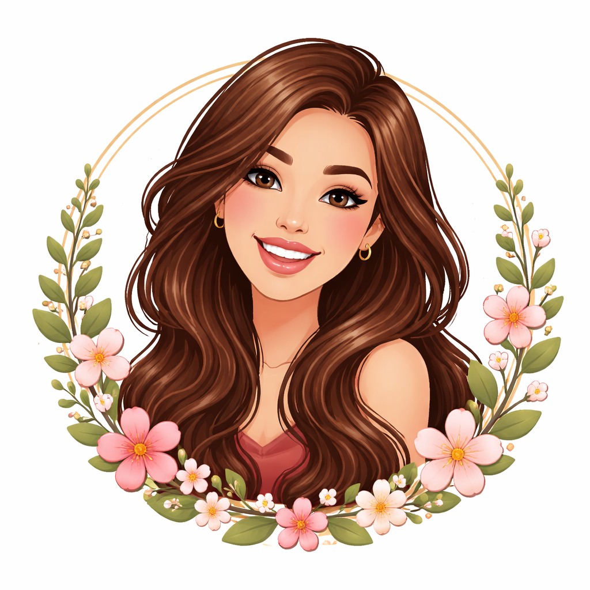

La música es una de mis mayores pasiones, a través de ella ecuentro inspiración y alegría. Donde las palabras terminan, comienza la música.

|
¡Hola¡Soy Carmen , estudiante de 2º de Bachillerato. Me interesan las ciencias porque nos permiten comprender el mundo que me rodea desde una perspectiva lógica, rigurosa y basada en evidencias.Sobre todo me interesan las ciencias de la salud. Ahora mismo estoy enfocandome en 2º de Bachillerato, ya que aunque que no sepa todavía lo que quiero estudiar me gustaría optener una buena media. Por eso intento esforzarme cada día mas. |
Fuera de clase me gusta realizar actividades que me hagan desconectar de la rutina.
|
Carmen haciendo deporte |
Carmen leyendo |
Me gusta trabajar en proyectos pequeños. Aquí dejo algunos ejemplos:
| Proyecto | Descripción | Tecnologías | Estado |
| Web personal | Página HTML dividida en secuencias incluyendo imagenes. | HTML. | Cada app es diferente. |
| Wed de vegetación. | Estudio sobre la vegetación de todas las partes del mundo, através de fotos que las reconocen y te dicen el nombre y información sobre ellas. | Documentación. | En proceso. |
| Investigación | Estudio sobre la cura de enfermedadades raras como la piel de mariposa. | Documentación. | En proceso. |
Para inspirarme, a veces leo noticias o busco documentos relacionados con el tema. Por ejemplo: Página wed
Sisitio wed desarrollado por Carmen Medina Blanco,2026
Contacto :cmedbla0509@g.educaand.es
